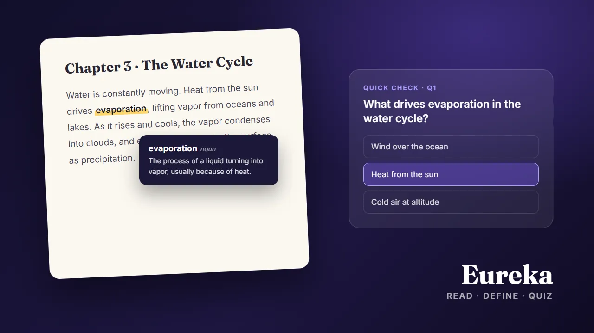
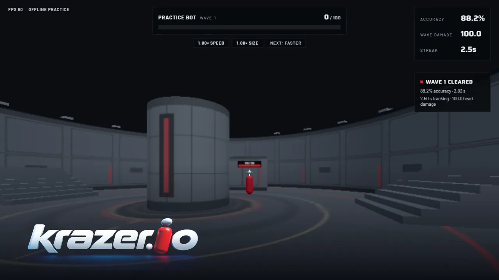
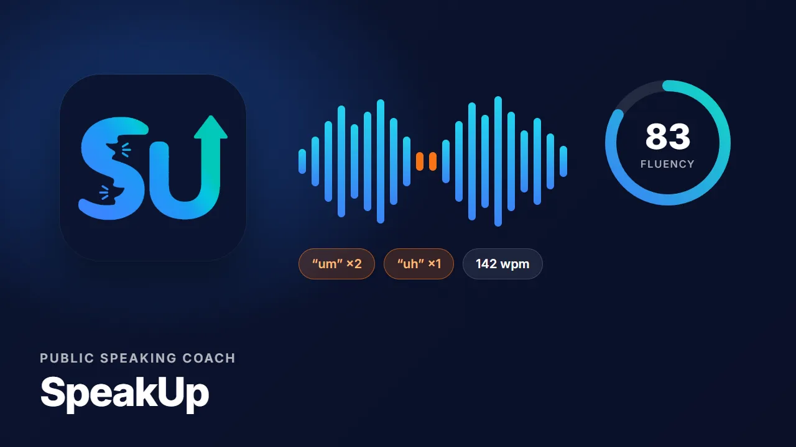
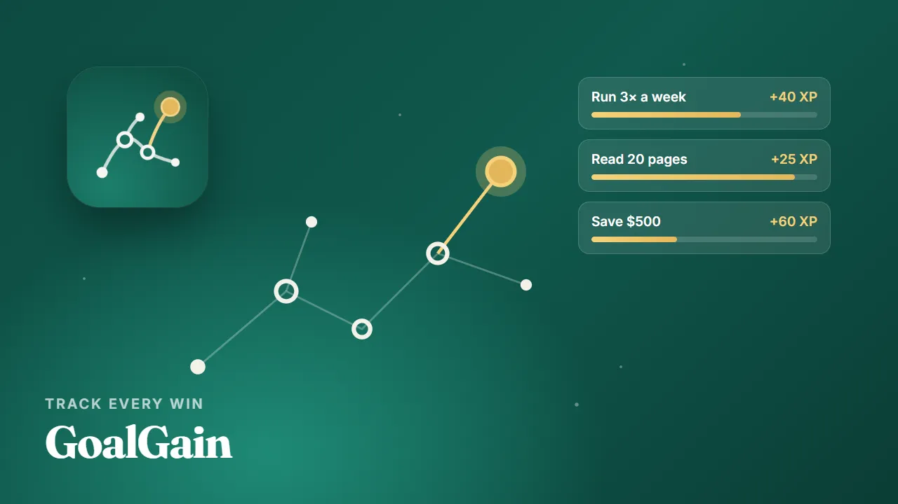
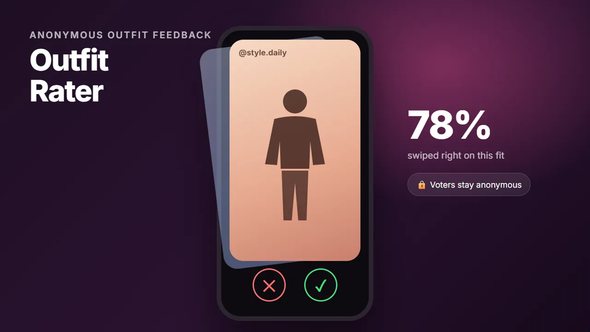
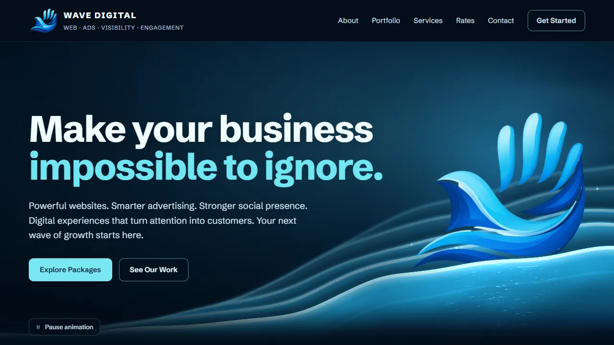
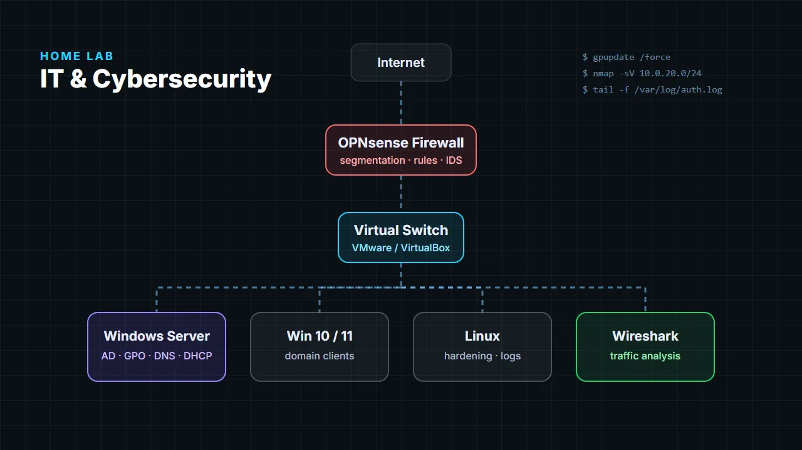

AI-Powered Reading & Study Platform • Lead Engineer
Turns PDFs into an ergonomic, study-ready reading experience with AI help built in.
- Built the PDF upload, rendering, and reading interface, now live in production.
- Implemented AI features including on-demand quiz generation and word definitions.
- Led engineering across the stack, shaping technical direction from build to live use.
Python
JavaScript
HTML
AI Features

First-person multiplayer aim duels
Real-time 1v1 mouse-tracking duels in the browser, with an authoritative game server,
accounts, public matchmaking, and an optional AI opponent.
- Node + Socket.IO server is the source of truth for movement, aim rays, and damage, so clients can’t fake hits.
- Private rooms with codes, public matchmaking, best-of-three rounds, rematches, and reconnection windows.
- Supabase accounts with server-confirmed progress, plus an endless practice mode with scaling waves.
- Tested with real Socket.IO clients alongside typecheck and build checks.
TypeScript
Node.js
Socket.IO
Vite
Supabase
Real-time Netcode

Public speaking coach
A mobile app that listens while you speak and scores your fluency, catches filler words,
and coaches you through interview answers, with ranked progression to keep you practicing.
- On-device speech recognition plus acoustic detection of “um” and “uh” using real word timings.
- Interview mode with STAR and elevator-pitch coaching, and a Read Aloud mode scored against the text.
- Topic verification with Claude online and a MiniLM model on-device (ExecuTorch) when offline.
- Elo-style ranks, XP, vocabulary building, daily notifications, and Google / Apple sign-in.
React Native
Expo
TypeScript
Firebase
Speech Recognition
On-device ML

Track every win. See what it adds up to.
A private, local-first goal tracker for iPhone that turns daily progress into XP,
unlocks, and a constellation-style home screen.
- Rules engine for recurrence, progress, unlocks, and XP, fully unit-tested.
- On-device SQLite database, tested against real SQLite, so it works offline with no account.
- Guided goal builder, timers, reviews, reminders, and Simple / Advanced modes.
- Supabase backend with row-level security for accounts and sync.
React Native
Expo
TypeScript
SQLite
Supabase
Jest

Honest, anonymous outfit feedback
A social app where people post outfits and others swipe to rate them. Posters see
aggregate results but never who voted.
- Monorepo with an Expo app, a Fastify REST + WebSocket API, and a background worker.
- Follows, friends-only posts, comments, direct messages, and share links.
- Postgres with row-level security, designed up front with a threat model and moderation built into the schema.
- Background jobs for the media pipeline, vote tallies, feed fan-out, and purges.
React Native
Expo
TypeScript
Fastify
PostgreSQL
WebSockets

Small business web design studio
My web design business, building fast, responsive websites that help small businesses
look professional and bring in customers.
- Developed 5+ live responsive websites for small businesses, focused on usability, branding, and mobile-friendly design.
- Gathered client requirements and translated business goals into functional layouts that helped businesses attract more customers.
- Built the studio’s own site with an animated hero, Stripe checkout, and SEO basics, hosted on GitHub Pages.
HTML
CSS
JavaScript
Stripe
GitHub Pages

IT & Cybersecurity Home Lab
Lab
Virtualized enterprise-style environment
- Built and maintained a lab with Windows Server, Windows 10/11, and Linux for system administration and security practice.
- Configured Active Directory, Group Policy, DNS, DHCP, shared resources, and access controls to simulate enterprise IT.
- Deployed firewall, network segmentation, and monitoring with OPNsense and Wireshark to analyze traffic.
- Practiced vulnerability testing, hardening, patching, and log analysis for incident response.
Windows Server
Active Directory
Linux
VMware/VirtualBox
OPNsense
Wireshark